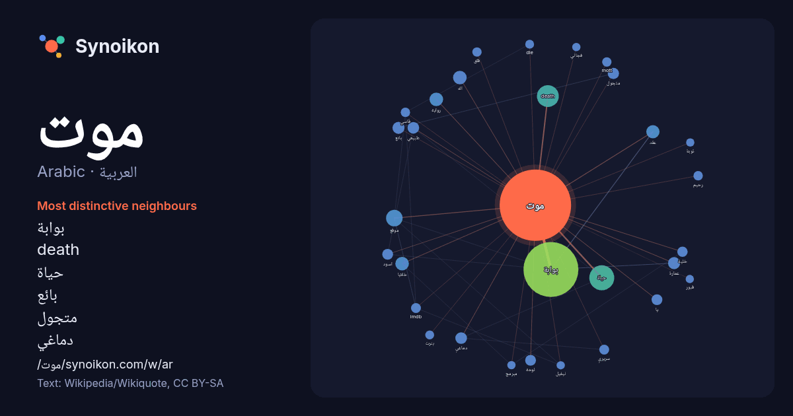

العربية · Arabic · popular word
موت
“death” · The words found around it in 1023 instances from Arabic Wikipedia, Wikiquote.

Most distinctive neighbours
- بوابة 248×
- death 49×
- حياة 16×
- بائع 15×
- متجول 14×
- دماغي 14×
- اله 14×
- عمارة 12×
- imdb 11×
- mott 10.0×
- سريري 9.9×
- قاسي 9.6×
- رحيم 9.0×
- بنرت 9.0×
- die 8.8×
- يا 8.7×
- موقع 8.6×
- عقد 8.5×
- لوحة 8.4×
- رواية 8.4×
× = how many times more often than in general Arabic Wikipedia text.
Most frequent neighbours
- بوابة 310
- حياة 64
- death 49
- موقع 28
- علم 22
- اله 19
- خلايا 19
- رواية 19
- عقد 18
- فيلم 16
- انسان 15
- بائع 15
- عمارة 15
- متحدة 15
- جزء 14
- حالة 14
- دماغي 14
- طبيعي 14
- قانون 13
- متجول 13
In context
- الموت هو حالة توقف الكائنات الحية نهائيًا عن النمو، والاستقلاب، والنشاطات الوظيفية الحيوية الأخرى مثل التنفس، والأكل، والشرب، والتفكير، والحركة، والمشاعر، Wikipedia snippets · موت
- يُقصد من «موت» ما يلي: موت: توقف لا رجعة فيه لجميع الوظائف الحيوية التي تدعم الكائن الحي. موت (إلهة): أم الآلهة في الأساطير المصرية القديمة. موت (إله): إله Wikipedia snippets · موت (توضيح)
- موت اللغة (في علم اللغة) هو نقص عدد متكلمي اللغة بسب موت متحدثيها أو إجبارهم على ترك لغتهم وتعلم لغة أخرى، أو بسبب عمليات التطهير العرقي والكوارث الطبيعية Wikipedia snippets · موت لغة
- قبل موت النور Before the Dying of the Light (الإنجليزية) تعديل - تعديل مصدري - تعديل ويكي بيانات قبل موت النور (بالإنجليزية Before the Dying of the Light Wikipedia snippets · قبل موت النور (فلم)
- … بر 2024 وفيات ديسمبر 2024 في كومنز مواد ذات صلة بـ وفيات 2024. بوابة أعلام بوابة التاريخ بوابة زمن بوابة عقد 2020 بوابة موت Wikipedia snippets · وفيات 2024
- ويليام أ. موت هو سياسي كندي، ولد في 29 نوفمبر 1864 في كامبلتون في كندا، وتوفي في 1 ديسمبر 1911 في سانت جون في كندا. New Brunswick provincial archives Wikipedia snippets · وليم أ. موت
- حاكم ألموت أو سيد ألموت هو لقب يطلق على زعيم طائفة النزارية، وكان أول من حمل هذا اللقب هو حسن الصباح. ويطلق هذا اللقب عادةً على حكام الدولة الإسماعيلية Wikipedia snippets · سيد ألموت
- موت فوق النيل أو موت في وادي النيل أو موت على النيل, (بالإنجليزية: Death on The Nile) هي رواية تحقيق من تأليف اغاثا كريستي، نشرت لأول مرة في المملكة المتحدة Wikipedia snippets · موت فوق النيل
More Arabic words
- أغنية
- إله
- تاريخ
- جبل
- جرس
- جزيرة
- جسر
- حديقة
- حصان
- حقيقة
- حياة
- خبز
- خريطة
- خريف
- ذهب
- زمن
- ساعة
- شاي
- شتاء
- صحة
- صحراء
- صمت
- صيف
- طبيعة
- طريق
- طعام
- ظل
- عائلة
- عاصفة
- عسل
- علم
- عمل
- غابة
- فن
- قطار
- قطة
- قلب
- قوة
- كلب
- لغة
- ماء
- مال
- مدينة
- مرآة
- مطر
- ملح
- مناخ
- نجم
- والدة
Precomputed on 2026-10-09 with default settings (±5 words, medium corpus). The interactive map can refresh it with live data.